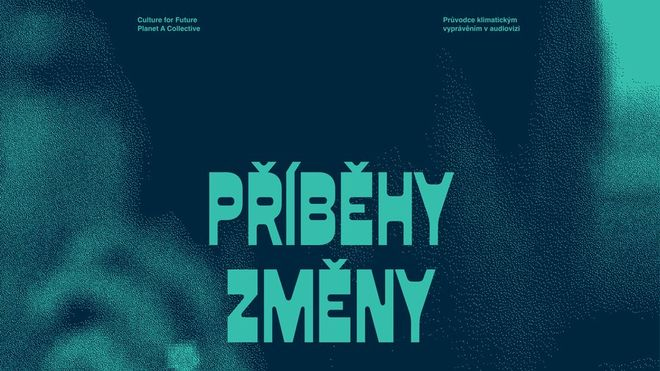
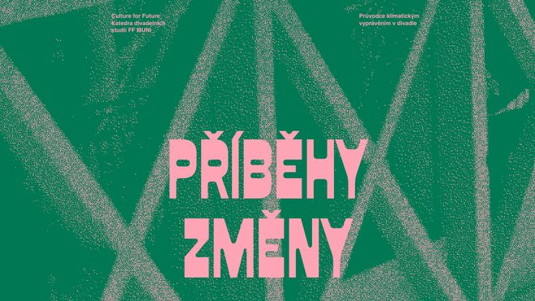
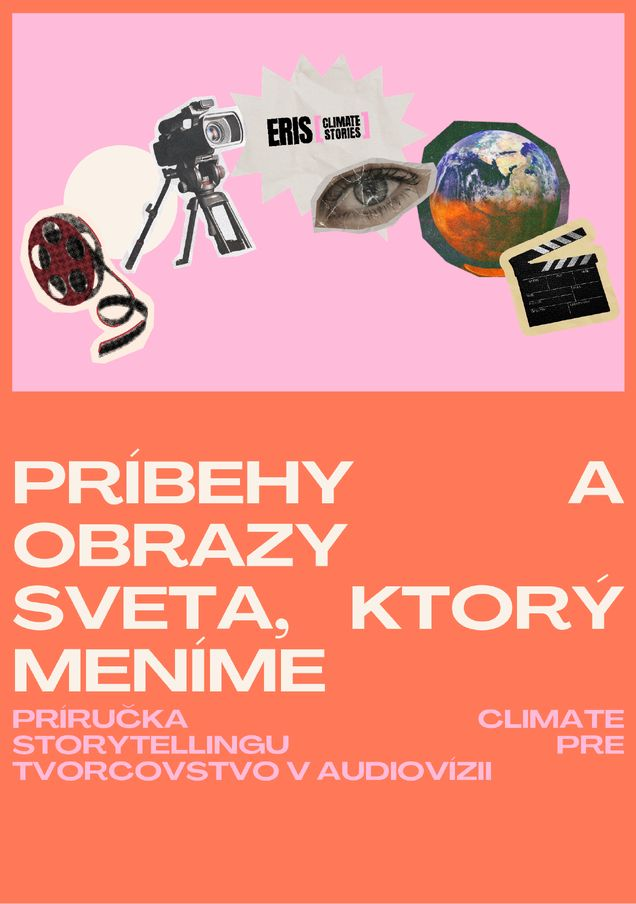
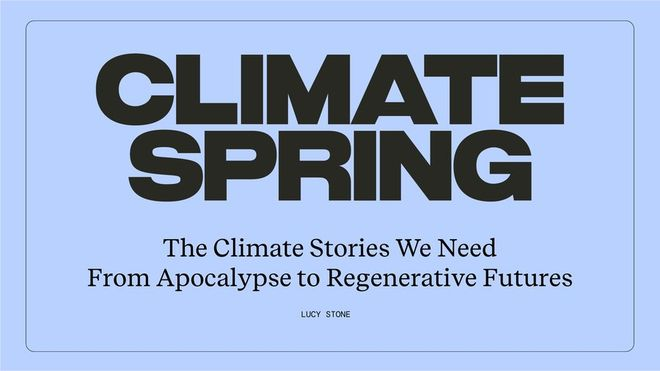
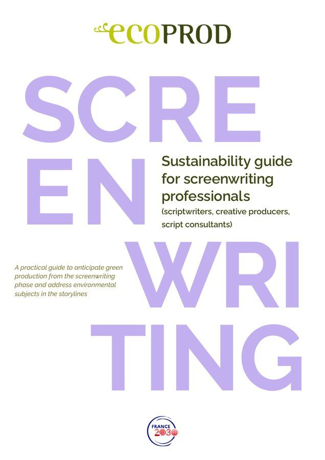
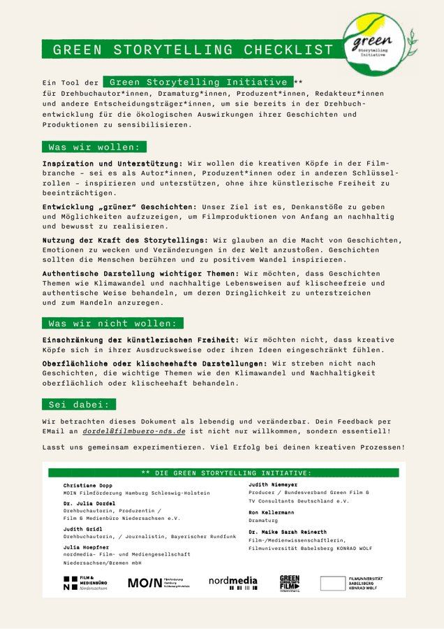

Ke stažení

Příběhy změny: Průvodce klimatickým vyprávěním v audiovizi
První česká brožura o klimatickém vyprávění vznikla ve spolupráci Planet A Collective a Culture for Future. Autorky Anna Tabášková a Josefína Nedvědová zde představují tipy, jak otevírat diskusi o změně klimatu způsobem, jakým to grafy, statistiky a neosobní čísla neumí – prostřednictvím příběhů.

Příběhy změny: Průvodce klimatickým vyprávěním v divadle
Druhá publikace Culture for Future, připravená ve spolupráci s Katedrou divadelních studií FF MUNI. Průvodce je zaměřený na divadlo, ale v mnohém je inspirativní i pro filmový průmysl.

Príbehy a obrazy sveta, ktorý meníme: Príručka climate storytellingu pre tvorcovstvo v audiovízii
Slovenská příručka ERIS [Climate Stories], kterou sestavili Anna Tabášková, Ondřej Kazík a tým ERIS. Na příkladech hraných a animovaných filmů, seriálů, dokumentů i publicistiky ukazuje, jak klimatická témata zapracovat do příběhů a čím se lze inspirovat.

The Climate Stories We Need: From Apocalypse to Regenerative Futures
Publikace britské organizace Climate Spring nabízí filmářům a televizním tvůrcům inovativní přístupy ke klimatickému vyprávění. Které z nich lze využít také v podmínkách české audiovize — a kde naopak narážejí na odlišné produkční a kulturní prostředí? V doprovodném komentáři se dozvíte více.

Sustainability guide for screenwriting professionals
Praktický průvodce francouzské iniciativy pro udržitelnou audiovizi Ecoprod, určený scenáristům, kreativním producentům a script konzultantům. Ukazuje, jak už ve fázi psaní scénáře počítat s udržitelnou výrobou a jak environmentální témata přirozeně zapracovat do dějových linek.

Green Storytelling Checklist
Stručný kontrolní seznam německé Green Storytelling Initiative, který pomáhá scenáristům, dramaturgům a producentům promyslet environmentální rozměr příběhu už při vývoji scénáře. Otázky jsou rozdělené do tří rovin: explicitní, implicitní a pragmatické green storytelling.
Tipy pro novou vlnu klimatického vyprávění
Budoucnost není daná +
Audiovizuální příběhy formují naši představivost, a právě proto by neměly nabízet jen dystopie bez východiska. Naděje přitom nemusí znamenat naivní optimismus; může vycházet z lidské schopnosti spolupracovat, adaptovat se a hledat řešení.
Klimatická realita jako přirozený background +
Klimatická změna nemusí být hlavním tématem, aby působila autenticky. Stejně jako technologie nebo sociální sítě může nenápadně prostupovat každodenní život postav, skrze počasí, energii, proměnu měst, zdraví či nové návyky.
Vyvarujme se zeleným klišé +
Opakující se obrazy apokalypsy, ledovců a karikatur ekoaktivistů působí předvídatelně a odtažitě. Nečekané perspektivy, každodenní dilemata a komplexní postavy, které nejsou definované jen svým vztahem ke klimatu, jsou divácky přístupnější. Environmentální téma unese romantická komedie, thriller i rodinné drama.
Lokální příběhy táhnou +
Klimatickou změnu si spojujeme s Amazonií nebo Arktidou, ale její dopady jsou vidět na stavu českých polí a lesů. Lidé se nejsnáze propojí s tím, co znají ze svého okolí, konkrétní lokální dopad působí silněji než globální statistika.
Moralizování a pocity viny: vstup zakázán +
Místo soudů a jednoduchých odpovědí je zajímavější otevírat otázky, ukazovat dilemata a nechat prostor pro vlastní interpretaci. Silný příběh nevzniká z pocitu povinnosti, ale z empatie, napětí a lidských konfliktů.
Klimatická změna zahrnuje celou škálu emocí +
Smutek, vztek, nostalgie a nejistota, ale i humor, odhodlání, odvaha, soucit a naděje. Emocionální pestrost přidává příběhům hloubku. A reakce lidí nejsou jednotné, každý prožívá klimatickou realitu jinak podle zkušenosti, generace i sociální situace.
Publikum a data
- Filmy tematizující klimatickou změnu vydělaly v kinech v průměru o 8–10 % více než ostatní (analýza 220 nejpopulárnějších filmů 2013–2022).
- 71 % české populace vnímá, že klimatická změna probíhá. Nejvíc je znepokojuje sucho (73 %), stav krajiny (65 %) a dopady na Česko (62 %).
- Seriál Limity sledovalo 959 tisíc dospělých diváků, více než čtvrtina všech, kdo měli zapnutou televizi. Celkem zasáhl přes 2,8 milionu lidí.
- K zemi hleď! (2021) nasbíral 152,29 milionu odsledovaných hodin během jediného týdne (27. 12. 2021 – 2. 1. 2022), což byl tehdejší rekord Netflixu pro film. Za prvních deset dní to bylo 263,32 milionu hodin.
Příležitosti: financování, workshopy, fellowships
Zapojte se do Platformy
Členství je otevřené producentům, studiím, školám i jednotlivcům. Přidejte se k organizacím, které udržitelnost v audiovizi řeší společně.
Potřebujete poradit? Chcete, abychom pro vás udělali přednášku nebo školení?
Ozvěte se — poradíme i bez členství. Od konkrétního natáčení po přednášku pro váš tým, štáb nebo školu.